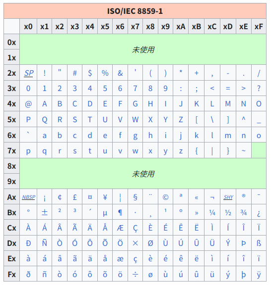

“Text to Math Converter” に Unicode の業の深さを見る

『数学ガール』シリーズでおなじみ結城浩さんが面白いツール（サービス）を公開されている。
早速試してみる。
変換結果の “𝐸 = 𝑚𝑐²” は Twitter や Mastodon の tweet や toot としてそのままコピペできる。
ホンマに「どうなってるんだ？」と20秒くらい考えてしまったが，そうか Unicode 文字で表現してるのか，と気がついた（気づくのが遅い）。 試しに拙作の gnkf でダンプしてみる。
$ echo 𝐸 = 𝑚𝑐² | gnkf dump -u
0x0001d438, 0x0020, 0x003d, 0x0020, 0x0001d45a, 0x0001d450, 0x00b2, 0x000a
おー，なるほど。
イタリックの英字は「数学用英数字記号（Mathematical Alphanumeric Symbols: U+1D400 〜 U+1D7FF）」として定義されているらしい1。
あくまで数学記号なので，通常の文章で装飾文字として使うなってあるね。
たしかにホモグラフ攻撃とかに使えそうだもんな（笑）
上付き文字の U+00B2 は ISO/IEC 8859-1 (通称 Latin-1) で定義されているものと同じである2。

この表を見ると上付き文字の数字は 1〜3 しかないな。
0 や 4 以降はどうなってるかというと “Superscripts and Subscripts ” (U+2070 〜 U+209F) で定義されているらしい。
つまり x^4 → 𝑥⁴ は
$ echo 𝑥⁴ | gnkf dump -u
0x0001d465, 0x2074, 0x000a
と展開されているわけだ。
これらを踏まえて “Text to Math Converter” では利用可能な文字3 を
としているようだ（a e o x の下付き文字 U+2090 〜 U+2093 がない理由は不明|a_m - a_n| < d → |𝑎ₘ - 𝑎ₙ| < 𝑑 とかいった感じ。
しかし，まぁ，元日早々から Unicode の業の深さを垣間見てしまった感じである。
でも “Text to Math Converter” 自体は面白いので，これからお世話になるかもしれない。
もちろん，このブログでは今までどおり MathJax で $E = mc^2$ → $E = mc^2$ と表記するので，本年もよろしくおねがいします。
ブックマーク
参考図書

- [改訂第8版]LaTeX2ε美文書作成入門
- 奥村晴彦 (著), 黒木裕介 (著)
- 技術評論社 2020-11-14
- 大型本
- 4297117126 (ASIN), 9784297117122 (EAN), 4297117126 (ISBN)
- 評価
2020年末に第8版が出てたのに気付かなかったよ。可能なら紙の本も買って常に側に置いておくのが吉。版元には PDF 版もある。
-
数学用英数字記号の詳細については公式の “Mathematical Alphanumeric Symbols ” を参照のこと。 ↩︎
-
というか Unicode の
U+00FFまでは ISO/IEC 8859-1 と同じである。 ↩︎ -
利用可能な文字や記号は随時追加されている。 ↩︎